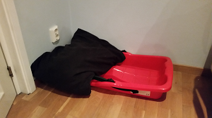
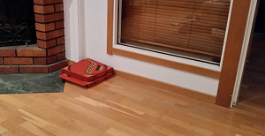

Det här är storyn om hunden som jag aldig har haft
Innan jag fick hem min låtsathund så förberedde jag mig noga. Jag köpte en massa saker som jag läst att det ska vara bra att ha som hundägare. Jag köpte koppel, matskål, vattenskål och en filt. Allt det jag köpte inför den stora dagen då jag skulle få hem ”Ingenting” -ja jag hade döpt den till det. Tyckte att namnet var passande å jag saknade faktiskt Ingenting fast jag inte ens hade träffat den än. Märkligt egentligen, men min psykolog sa att allt var normalt och att jag skulle bli en bra husse till Ingenting.
Den var väldigt dyr men kennelns ägare ”Hedeliga Harry” sa att Ingenting var av en fin ras med långa anor, ända bort till Kejsarens nya kläders tid. Dessutom hade jag fått ”runthörnet garanti” så det verkade inte bli några problem. ”Hederliga Harry” var dessutom väldigt snäll och jag fick själv välja vem som skulle bli Ingenting. Jag tyckte själv att det var väldigt tomt i hundgården där alla hundarna var men ”Hedelige Harry” sa att det var för att alla var lite blyga och inte vågade visa sig för mig. Det skulle nog ändra sig när vi kommit hem.
När jag äntligen kommit hem med Ingenting så var jag väldigt förhoppningsfull. Jag ville ju så gärna se hur den såg ut! Hade den alla tassar, en framdel och en bakdel som alla andra hundar brukar ha? Jag satt i min soffa i nästa 7 veckor utan att se den en enda gång. Till slut tröttnade jag och ringde till Polisen.
- Jag tror att jag har tappat bort Ingenting, sa jag.
- Men det är väl bra, sa Polisen. Det är väl bra att du inte har tappat bort nånting?
- Nä inte någonting, Ingenting! Försökte jag förklara.
- Ja, Ingenting…
- Men då får jag ju aldrig veta hur den ser ut…
- Vad har du för adress? Frågade Polisen
Nästa story handlar om när jag fick bo på sjukhus.
Det började med….